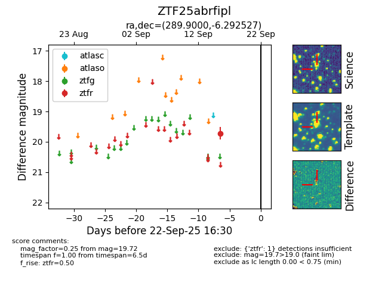

FINK: ZTF25abrfipl
Lasair: ZTF25abrfipl
ALeRCE: ZTF25abrfipl
ZTF25abrfipl (ztf,fink)
equatorial (ra, dec) = (289.9000,-6.29253)
galactic (l, b) = (30.4944,-9.11446)

last ztfr=19.72
1 ztfr detections